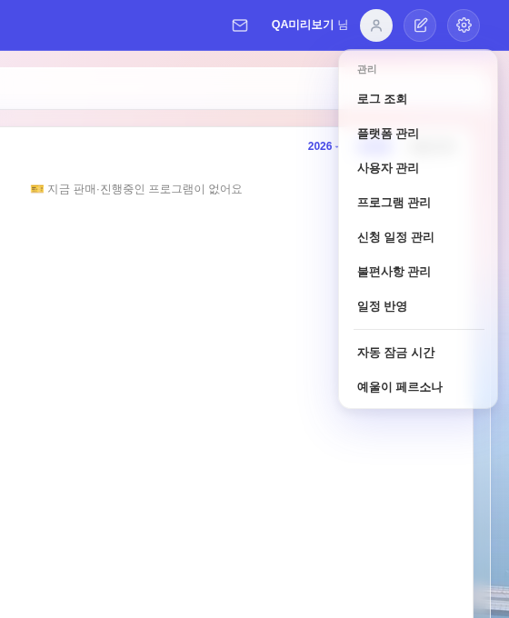
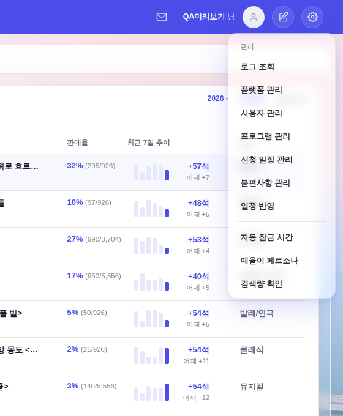
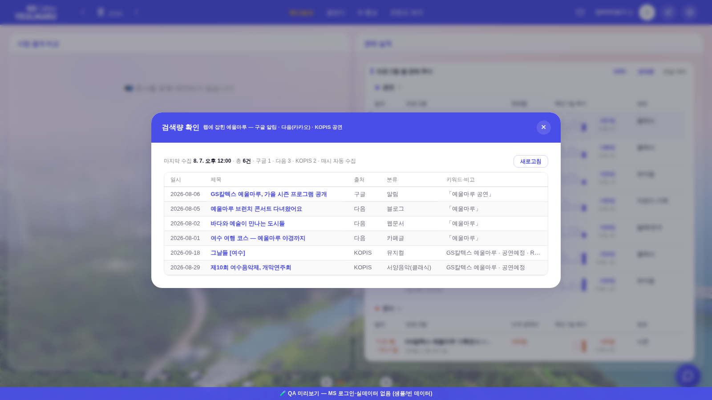

지시(운영자): 「쌓인 걸 그대로 볼 수 있는거는 일단 설정- 검색량 확인 하나 만들어서 거기에 리스트업을 쭉해줘. 리스트업 디자인은 사업 대시보드에 공연 리스트와 동일한 느낌으로 활용」.
화면 = QA 진입로(?qa=admin) + 결정적 목 6행(tools/qa_mock_ops.mjs — Worker 실물과 같은 「쌓인 순서」) · 실데이터·PII 미접촉.
데이터 원천 = Worker /api/monitor/feed(구글 알림 · 다음(카카오) · KOPIS 공연 — 매시 자동 수집 · 알림 발화 0 = Q28 준수).
전 — 마지막 항목 = 예울이 페르소나

후 — 「검색량 확인」 추가


| 부위 | 내용 |
|---|---|
| 자리 | 설정(톱니) 드롭다운 ▸ 검색량 확인 — 모달 골격은 openLockSettings 계승(#admin-panel 공유 · _mhead 머리줄) |
| 요약줄 | 마지막 수집(KST) · 총 건수 · 갈래별 건수(구글·다음·KOPIS) · 「매시 자동 수집」 + 새로고침(.btn--ghost) |
| 표 | 사업 대시보드 공연 리스트(_bizListTable) 문법 그대로 — sticky 머리글(--dim 12px · inset 하단선) · 제브라(--past-bg) · 행 하단선(--border) · 제목 1행 말줄임(칸 자체에 max-width:0) · tabular-nums 일시. 열 = 일시 · 제목(원문 새 창) · 출처 · 분류 · 키워드·비고(걸린 검색어 「…」 / KOPIS 시설·상태·가격) |
| 순서 | 재정렬 없음 — Worker가 쌓은 순서 그대로(「쌓인 걸 그대로」) = 스캔 배치 최신순 · 배치 안 구글→다음(최신순)→KOPIS |
| 빈 상태·실패 | 0건 = .u-empty(📡 아직 수집된 결과가 없어요) · 실패 = --danger 문구 + 다시 시도 |
같은 피드(/api/monitor/feed)를 읽는 화면이 이미 하나 있다(260807-12 · 갈래 칩 + [지금 확인] + 기간 필터).
이번 것은 운영자가 자리(설정)와 표현(공연 리스트 표 문법)을 따로 지정한 열람 전용 창이라 병존한다 — 조회 로직은 양쪽 다 Worker API 한 곳(SSOT)이고 프론트 상태·함수는 접두사가 다르다(_smw* ↔ _sm*).
window.api 위임 래핑으로 먹인다(예매집계와 같은 경로) — _qaApi 접근자가 페이지 선언에 덮이는 자리라, _smwLoad의 실제 파싱 경로를 그대로 밟는다.check_design 1545/1545(신규 hex 0) · check_modal_head 모달 전건(신설 모달 포함) · check_biz_list(정본 1벌 유지) · check_refs·check_wiring·check_exchart ✓ · pre-commit 스모크 전건.